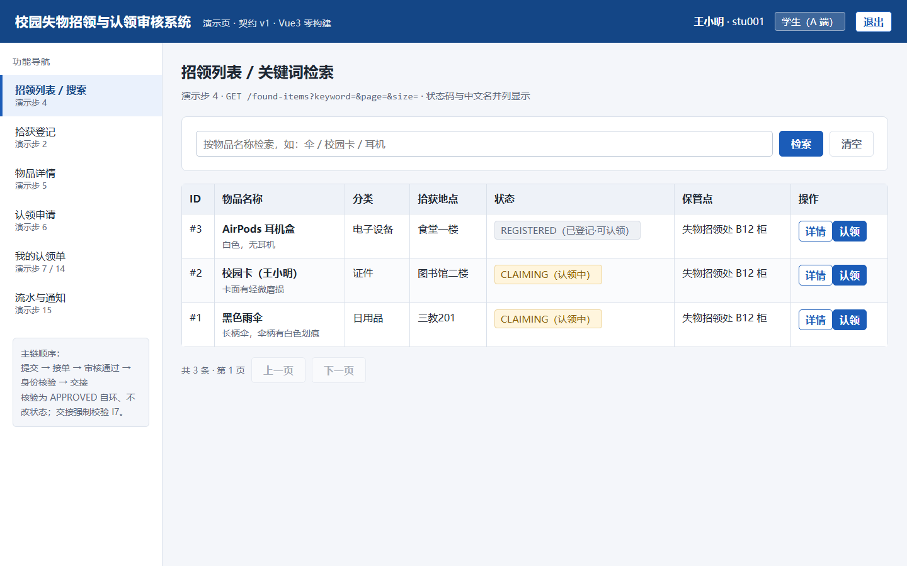
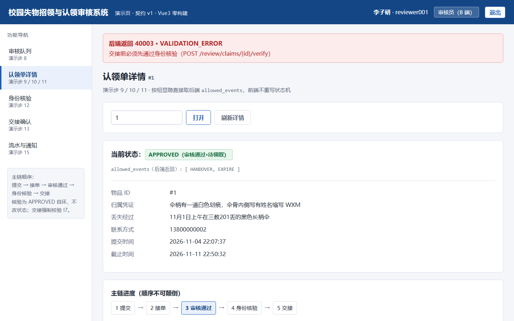
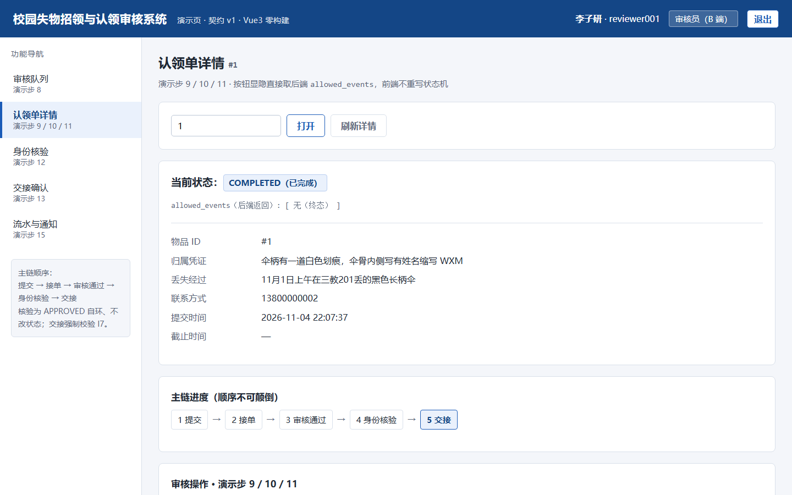

第 2 组软件工程课程设计
2026 · 秋
CAMPUS LOST & FOUND · 产品宣传彩页
校园失物招领与
认领审核系统
Campus Lost-and-Found & Claim Verification System
让每一件失物都有据可查，让每一次认领都经得起核验。
把「谁捡到、谁申请、谁审核、谁核验、谁取走」串成一条不可跳步的可追溯链路。
三端 RBAC8 态状态机
I7 防冒领全流程流水
契约驱动24/24 测试通过
01
我们解决什么
真实校园场景 · 明确用户价值
找得慢、对不上
失物信息散落在群聊与公告栏，分类、地点、时间没有统一口径，失主只能一条条翻。
冒领风险无人兜底
「说得出特征」不等于「是本人」，线下交接缺一道身份核验，物品易被错领。
流程黑盒、责任不清
谁接的单、为什么驳回、有没有核验过，事后无据可查，争议无法复盘。
02
一个系统，三种角色
单工程 + RBAC，不拆三套
A · student学生端
- 发布失物 / 招领登记
- 按分类、地点检索
- 提交认领申请与凭证
- 补充材料、查看结果
B · reviewer审核端
- 待审核队列与接单
- 凭证比对、通过 / 退补
- 身份核验、线下交接
- 审核流水全程留痕
C · super_admin后台管理端
- 用户与角色管理
- 分类 / 地点字典维护
- 审计日志与统计看板
- 认领单 Excel 导出
03
核心亮点：把核验做成硬约束
不是页面，是状态机的不变量
认领单定义 8 个状态、12 条合法迁移、终态封闭，非法迁移一律拒绝并回业务错误码；身份核验是 APPROVED 自环（状态不变、写 VERIFY 流水），交接前强制校验，跳步直接拦截。
提交SUBMITTED
›
接单UNDER_REVIEW
›
审核通过APPROVED
›
身份核验VERIFY 自环
›
线下交接COMPLETED
不变量 I7：未产生「核验通过」流水时调用交接接口，系统返回 40003「交接前必须先通过身份核验」；核验不通过同样留下流水，可追溯、可复盘。
04
真实运行界面
浏览器实测截图 · 种子虚构数据

A 端招领列表
关键词 / 分类 / 地点检索

I7 拦截
未核验交接返回 40003 并红显

交接完成
状态流转至 COMPLETED
05
技术规格与验证
如实标注实施边界
工程与数据
| 业务可跑原型 | FastAPI + SQLAlchemy + SQLite，9 张表 / 24 条路由 |
| 正式方案骨架 | Vue3 + TS + Vite + Element Plus；Spring Boot 3.2.5 + MyBatis-Plus + JWT |
| 接口契约 | 30 条 REST，按 A / B / C 三端分组，v1 冻结 |
| 演示前端 | Vue3 零构建单页，无 CDN 依赖，可离线运行 |
测试与证据
| 后端冒烟 | 24 项断言，两次独立复现全绿、失败 0 |
| 浏览器端到端 | 15/15 通过，覆盖核验拦截与交接主链 |
| 状态机覆盖 | 8 态 / 12 合法迁移 / 终态封闭 / I1–I7 |
| 实施边界 | C 端后台接口与正式 Spring Boot 业务层为骨架，按「构件对应、可平移」说明 |
界面截图中的数据均为种子虚构数据，不含真实个人信息。